WHO AM YOU
As a Backend Designer I used to develop & maintain design systems.
As a Front-End Designer I facilitate these design systems to build clever User Interfaces, prototype new features in Figma, taking into account all stakeholders and working closely with the developers, or even build them myself by facilitating AI in the best possible way.
Design is emerging. That's why I find myself more in CLIs these days, than in Figma. I don't feel threatened by AI—it empowers me as a tastemaker.
I like working in systems and develop features and interfaces as much as I can be truly creative by diving into graphics and even art. It brings me joy creating something nice.

Currently living in Berlin I work fully remote at img.ly. There we build a so called CreativeEditor SDK. Our mission is to empower creativity all over the world.
HOW I